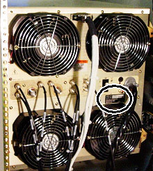
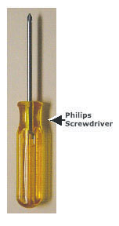
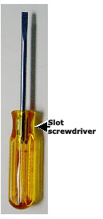
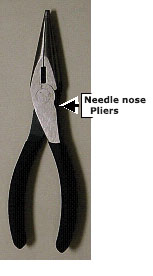
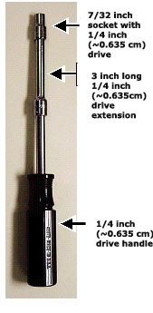

Operating Documentation
Direction 5440000, Rev# 5
Signa HDxt Service Methods
Module Version 2.0, Version Date 12/1/09
Operating Documentation |
This document describes the process for replacing fans on the outside rear of the SRFD2 RF amplifier. There are two different SRFD2 RF amplifier configurations and different fan replacement processes for each. The process for changing fans on older SRFD2 RF amplifiers is much different than that used to change fans on newer units. Older amplifiers can be identified by the serial number printed on the manufacturer rating plate affixed to the rear of the amplifier. See Illustration 1.
The serial number is printed on the second line of the rating plate and is reported as YRFW-####
Where YR is the last two digits of the year it was built, FW is the two digit fiscal week, and #### is the 4 digit unit number.
Illustration 1: SRFD2 SERIAL NUMBER RATING PLATE

Any units where the YR code is 02 or less and the #### code is 0001 to 0030 (a letter “P” may be appended after this number) should use the procedure Section 2 Fan Replacement for Early SRFD2 Amplifiers ONLY. Use the procedure described in Section 3 Fan Replacement for Later SRFD2 (Serial numbers 31 or higher) Amplifiers ONLY to replace fans in all other units.
Illustration 2: Tool Item 1

Illustration 3: Tool Item 2

Illustration 4: Tool Item 3

#2 Phillips screwdriver. See Illustration 2
Slot screwdriver. See Illustration 3
Needle nose pliers. See Illustration 4
Proceed to Fan Replacement For Early SRFD2 Amplifiers ONLY for fan replacement instructions.
7/32 inch socket with ¼ inch (~0.635cm) drive (Item 1). See Illustration 5
3 inch long ¼ inch (~0.635cm) drive extension (Item 2). See Illustration 5
¼ inch (~0.635cm) drive handle (Item 3). See Illustration 5
Needle nose pliers (Item 4). See Illustration 4
Illustration 5: Items 1,2 and 3

Proceed to Fan Replacement For Later SRFD2 Amplifiers Only for fan replacement instructions.